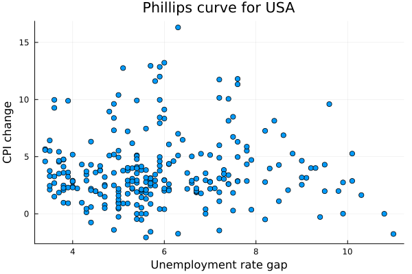

Regime switching Phillips curve
One of the most popular macroeconomic relationships is the trade-off between inflation and unemployment. The so-called Phillips curve is discussed in both introductory macroeconomics courses and at the meetings of central banks. The curve is an empirical observation that provide some evidence of a stylized fact that the inflation falls during recessions and rises during booms.
However, many policymakers and academic economists have argued that the historical relationship has changed over time. The 'flattening' of the Phillips curve poses a challenge for policymakers, as it can imply that countercyclical policy may not be effective in steering inflation toward the established central bank's target.
To investigate the time-varying nature of the Phillips curve, we will estimate a Markov switching model.
First we would need a dataset with quarterly inflation and unemployment. We will use the data from the Federal Reserve Bank of St. Louis (FRED) database. The data are available in the repo of the package.
using MarSwitching
using DataFrames
using CSV
df = CSV.read("my_assets/philips.csv", DataFrame)
model_df = dropmissing(select(df, [:inflation_q, :unrate, :infexp])) Let's see how the relationship looks like in the raw data:
using Plots
plot_df = filter(x -> x.inflation_q .> -5, model_df) # remove outliers
phil_plot = plot(plot_df.unrate, plot_df.inflation_q,
seriestype=:scatter, legend = :none,
xlabel = "Unemployment rate gap", ylabel = "CPI change", title = "Phillips curve for USA")
Overall, the relationship is far from being clear. The slope of plotted data is just slightly negative.
x = [ones(size(model_df)[1]) model_df.unrate]
(x'x)^(-1)*(x'model_df.inflation_q)2-element Vector{Float64}:
3.7063395889109216
-0.009863282898990633However, as it often the case, plotting scatterplots falls short when trying to find evidence of more complex phenomena.
Now, how can theory guide our model specification? The developments in New Keynesian economic theory, provides a model where:
Inflation is sticky, i.e. it does not adjust immediately to changes in the economy. This might be because of the rigid contracts between firms and workers, or because of the inertia in the price setting process.
Inflation expectations matter. The economic agents keep in mind the inflation target of the central bank or the past inflation when setting prices.
Both of the reasons above suggests the use of another variable, namely inflation moving average. Altough obvious from purely econometric point of view, addition of this variable is well grounded in theory.
x = [ones(size(model_df)[1]) model_df.unrate model_df.infexp]
(x'x)^(-1)*(x'model_df.inflation_q)3-element Vector{Float64}:
2.4568979893419316
-0.30170682289104334
0.8229587847541349Indeed, once we add the inflation expectations, the slope of the New Keynesian Phillips curve becomes more negative.
Now, in order to check the time-varying nature of the Phillips curve, or the so-called "flattening" of thereof, we will estimate a Markov switching model.
using Random
Random.seed!(1)
model = MSModel(model_df.inflation_q, 2,
exog_switching_vars = [model_df.unrate model_df.infexp],
switching_var = true)
summary_msm(model) Markov Switching Model with 2 regimes
=================================================================
# of observations: 259 AIC: 1117.738
# of estimated parameters: 10 BIC: 1153.306
Error distribution: Gaussian Instant. adj. R^2: 0.51
Loglikelihood: -548.9 Step-ahead adj. R^2: 0.48
-----------------------------------------------------------------
------------------------------
Summary of regime 1:
------------------------------
Coefficient | Estimate | Std. Error | z value | Pr(>|z|)
-------------------------------------------------------------------
β_0 | 10.961 | 2.473 | 4.433 | < 1e-3
β_1 | -1.569 | 0.392 | -4.004 | < 1e-3
β_2 | 0.968 | 0.195 | 4.967 | < 1e-3
σ | 3.612 | 0.106 | 33.952 | < 1e-3
-------------------------------------------------------------------
Expected regime duration: 7.81 periods
-------------------------------------------------------------------
------------------------------
Summary of regime 2:
------------------------------
Coefficient | Estimate | Std. Error | z value | Pr(>|z|)
-------------------------------------------------------------------
β_0 | 1.367 | 0.474 | 2.88 | 0.004
β_1 | -0.035 | 0.073 | -0.483 | 0.629
β_2 | 0.565 | 0.072 | 7.898 | < 1e-3
σ | 1.519 | 0.037 | 41.113 | < 1e-3
-------------------------------------------------------------------
Expected regime duration: 30.79 periods
-------------------------------------------------------------------
left-stochastic transition matrix:
| regime 1 | regime 2
---------------------------------------
regime 1 | 87.202% | 3.247% |
regime 2 | 12.798% | 96.753% |The model shows that there are 2 regimes of the cyclical relationship. The first regime is characterized by significantly negative slope of the Phillips curve. This is a regime, which should allow policy makers to have some influence on the inflation. The second regime is characterized by a very flat Phillips curve, as the coefficient for unemployment is not significantly different than zero. The inflation during this regime is also substantially less volatile than otherwise.
Unfortunately for policy makers, the average duration of the favorable regime is ~8 quarters, while the flat Phillips curve is the dominant regime with the average duration of ~31 quarters.
probs_phil = plot(filtered_probs(model),
label = ["Steep Phillips curve" "Flat Phillips curve"],
title = "Regime probabilities",
linewidth = 2,
legend = :bottomleft)
The plot above shows the probability of being in particular regime. Instead of "flattening" the model shows more of an infreaquent appearences of steep Phillips curve. Altough indeed, this regime was more frequent in the 70s and 80s than it is now.